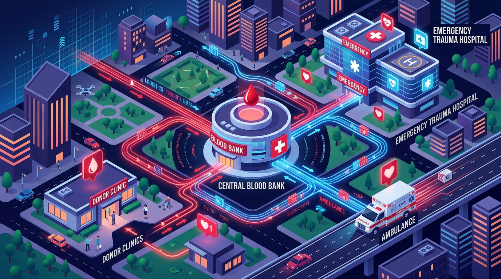
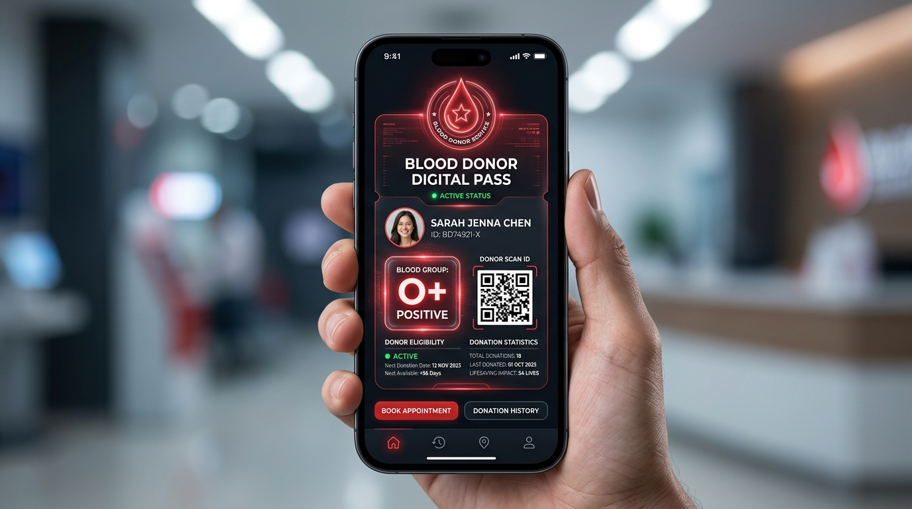

BLOOD DONATION
MANAGEMENT SYSTEM
Centralized Healthcare Information Infrastructure, Real-Time Inventory Control & Automated ABO/Rh Donor Matching
Problem Statement: Emergency Response Latency
The Healthcare Bottleneck
Whole blood has a strict shelf-life of 35-42 days with zero synthetic substitutes. Over 85% of blood banks maintain siloed, paper-based records.
Latency Comparison (Minutes)
Live Blood Inventory Distribution (8 Blood Groups)
Smart City Healthcare Logistics & System Architecture

HTML5 Semantic Views • CSS3 Modern Healthcare Palette • Vanilla ES6+ JS • Chart.js Real-Time Dashboards • Zero bloated bundle overhead.
Node.js & Express.js Engine • Asynchronous Non-Blocking Event Loop • Endpoints: /api/inventory, /api/donors, /api/requests, /api/matching, /api/live-sync.
Clinical ABO/Rh Transfusion Matrix • Multi-Factor Scoring: Base (50) + Exact Group (+30) + City Proximity (+20) • Dynamic donor ranking.
Production 3NF MySQL Relational Database (database.sql) + Zero-Config Persistent Local Storage Fallback for reliable viva defense.
Clinical ABO/Rh Compatibility Engine & Formulation
Clinical Transfusion Rules
Can donate to all 8 blood groups (A+, A-, B+, B-, AB+, AB-, O+, O-). Critically needed for emergency trauma resuscitation.
Possesses both A and B antigens and Rh factor; can safely receive red cells from all 8 blood groups.
Can donate to all Rh-positive groups (O+, A+, B+, AB+), covering over 85% of clinical patients in India.
Rh- individuals can ONLY receive Rh- blood. Transfusing Rh+ causes severe fatal hemolytic transfusion reactions.
Mathematical Proximity Formulation
- 1. Blood Compatibility Bonus (W_blood):
• Exact Blood Group Match: +30 Points
• Clinically Compatible Alternative: +15 Points - 2. Spatial Proximity Bonus (W_location):
• Same City Match (e.g. Delhi to Delhi): +20 Points
• Nearby District: +10 Points - 3. Clinical Eligibility Gate:
•is_available == TRUEandstatus == "Active"
• Age in range [18, 65] years • Donation interval ≥ 90 days
Requisition Workflow & Fulfillment Breakdown
Request Fulfillment Breakdown
4-Step Live Milestone Tracking
Patient or hospital submits requisition with units needed and emergency priority flag.
Admin or hospital coordinator verifies clinical diagnosis and prescription.
Auto-dispense from inventory or algorithmic matching with nearby voluntary donors.
Units received at medical center; inventory stock updated and transaction audited.
Monthly Voluntary Donation Drives & Requisition Trends
Digital Donor Pass & Smart Mobile Engagement

Instant verifiable electronic pass generated with official unique identifier and dynamic verification badge.
Evaluates age (18-65), body weight (>50kg), hemoglobin level, and last donation interval (>= 90 days).
Allows hospital intake coordinators to scan donor credential at emergency triage for instant identity audit.
Displays total units contributed, previous donation dates, and next eligibility date.
Executive Administrator Dashboard & Live Telemetry
Chief Medical Administrator: Dr. Anshuman Jaglan
Role-based administrative authentication with session security and comprehensive audit trails.
Direct +/- buttons to increment or decrement units for emergency shipments or walk-in camps.
One-click action to dispense directly from blood bank stock (auto-deducts units) or assign registered donors.
Live Dynamic Telemetry & Persistent Memory
Clicking Refresh Live Data executes simulation syncing realistic hospital activity while permanently preserving manual edits into memory!
Live stock bar charts and requisition doughnut charts dynamically re-render upon data sync.
Export verified donor registries and complete inventory balance sheets for academic viva assessment.
Testing, Verification & Cloud Deployment
Containerized with Docker (Node.js 20-Alpine) on Render.com with automated GitHub CI/CD git integration.
Accessible via global public HTTPS tunnel from mobile phones and external review panels worldwide.
Includes run-server.bat, share-online.bat, and present.bat for instant offline defense.
Societal Impact, SDGs & Future Enhancements
Sustainable Development Goals (SDGs)
• SDG 9 (Industry, Innovation & Infrastructure): Replaces archaic paper logs with an enterprise-grade digital health network.
Future Roadmap Enhancements
• IoT Cold-Chain Storage Monitoring: Integrated hardware sensors to ensure blood bags maintain 2°C to 6°C cold-chain integrity.
THANK YOU
Questions & Viva Voce Discussion
• Harsh Solanki (Roll No: 01514813123)
• Umesh Kumar (Roll No: 01314813123)